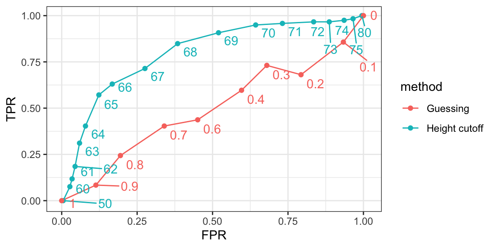

25 Evaluation metrics
Before we start describing approaches to optimize the way we build algorithms, we first need to define what we mean when we say one approach is better than another. In this section, we focus on describing ways in which machine learning algorithms are evaluated. Specifically, we need to quantify what we mean by “better”.
For our first introduction to machine learning concepts, we will start with a boring and simple example: how to predict sex using height. As we explain machine learning step by step, this example will let us set down the first building block. Soon enough, we will be attacking more interesting challenges. We use the caret package, which has several useful functions for building and assessing machine learning methods and we introduce in more detail in Section Section 30.1, and for a first example, we use the height data in dslabs.
We start by defining the outcome and predictors.
y <- heights$sex
x <- heights$heightIn this case, we have only one predictor, height, and y is clearly a categorical outcome since observed values are either Male or Female. We know that we will not be able to predict \(Y\) very accurately based on \(X\) because male and female average heights are not that different relative to within group variability. But can we do better than guessing? To answer this question, we need a quantitative definition of better.
25.1 Training and test sets
Ultimately, a machine learning algorithm is evaluated on how it performs in the real world with completely new datasets. However, when developing an algorithm, we usually have a dataset for which we know the outcomes, as we do with the heights: we know the sex of every student in our dataset. Therefore, to mimic the ultimate evaluation process, we typically split the data into two parts and act as if we don’t know the outcome for one of these. We stop pretending we don’t know the outcome to evaluate the algorithm, but only after we are done constructing it. We refer to the group for which we know the outcome, and use to develop the algorithm, as the training set. We refer to the group for which we pretend we don’t know the outcome as the test set.
A standard way of generating the training and test sets is by randomly splitting the data. The caret package includes the function createDataPartition that helps us generates indexes for randomly splitting the data into training and test sets:
set.seed(2007)
test_index <- createDataPartition(y, times = 1, p = 0.5, list = FALSE)The argument times is used to define how many random samples of indexes to return, the argument p is used to define what proportion of the data is represented by the index, and the argument list is used to decide if we want the indexes returned as a list or not. We can use the result of the createDataPartition function call to define the training and test sets like this:
test_set <- heights[test_index, ]
train_set <- heights[-test_index, ]We will now develop an algorithm using only the training set. Once we are done developing the algorithm, we will freeze it and evaluate it using the test set. The simplest way to evaluate the algorithm when the outcomes are categorical is by simply reporting the proportion of cases that were correctly predicted in the test set. This metric is usually referred to as overall accuracy.
25.2 Overall accuracy
To demonstrate the use of overall accuracy, we will build two competing algorithms and compare them.
Let’s start by developing the simplest possible machine algorithm: guessing the outcome.
Note that we are completely ignoring the predictor and simply guessing the sex.
In machine learning applications, it is useful to use factors to represent the categorical outcomes because R functions developed for machine learning, such as those in the caret package, require or recommend that categorical outcomes be coded as factors. So convert y_hat to factors using the factor function:
The overall accuracy is simply defined as the overall proportion that is predicted correctly:
mean(y_hat == test_set$sex)
#> [1] 0.51Not surprisingly, our accuracy is about 50%. We are guessing!
Can we do better? Exploratory data analysis suggests we can because, on average, males are slightly taller than females:
But how do we make use of this insight? Let’s try another simple approach: predict Male if height is within two standard deviations from the average male:
The accuracy goes up from 0.50 to about 0.80:
mean(y == y_hat)
#> [1] 0.793But can we do even better? In the example above, we used a cutoff of 62, but we can examine the accuracy obtained for other cutoffs and then pick the value that provides the best results. But remember, it is important that we optimize the cutoff using only the training set: the test set is only for evaluation. Although for this simplistic example it is not much of a problem, later we will learn that evaluating an algorithm on the training set can lead to overfitting, which often results in dangerously over-optimistic assessments.
Here we examine the accuracy of 10 different cutoffs and pick the one yielding the best result:
We can make a plot showing the accuracy obtained on the training set for males and females:

We see that the maximum value is:
max(accuracy)
#> [1] 0.85which is much higher than 0.5. The cutoff resulting in this accuracy is:
best_cutoff <- cutoff[which.max(accuracy)]
best_cutoff
#> [1] 64We can now test this cutoff on our test set to make sure our accuracy is not overly optimistic:
We see that it is a bit lower than the accuracy observed for the training set, but it is still better than guessing. And by testing on a dataset that we did not train on, we know our result is not due to cherry-picking a good result.
25.3 The confusion matrix
The prediction rule we developed in the previous section predicts Male if the student is taller than 64 inches. Given that the average female is about 64 inches, this prediction rule seems wrong. What happened? If a student is the height of the average female, shouldn’t we predict Female?
Generally speaking, overall accuracy can be a deceptive measure. To see this, we will start by constructing what is referred to as the confusion matrix, which basically tabulates each combination of prediction and actual value. We can do this in R using the function table:
table(predicted = y_hat, actual = test_set$sex)
#> actual
#> predicted Female Male
#> Female 48 32
#> Male 71 374If we study this table closely, it reveals a problem. If we compute the accuracy separately for each sex, we get:
There is an imbalance in the accuracy for males and females: too many females are predicted to be male. We are calling almost half of the females male! How can our overall accuracy be so high then? This is because the prevalence of males in this dataset is high. These heights were collected from three data sciences courses, two of which had more males enrolled:
prev <- mean(y == "Male")
prev
#> [1] 0.773So when computing overall accuracy, the high percentage of mistakes made for females is outweighed by the gains in correct calls for men. This can actually be a big problem in machine learning. If your training data is biased in some way, you are likely to develop algorithms that are biased as well. The fact that we used a test set does not matter because it is also derived from the original biased dataset. This is one of the reasons we look at metrics other than overall accuracy when evaluating a machine learning algorithm.
There are several metrics that we can use to evaluate an algorithm in a way that prevalence does not cloud our assessment, and these can all be derived from the confusion matrix. A general improvement to using overall accuracy is to study sensitivity and specificity separately.
25.4 Sensitivity and specificity
To define sensitivity and specificity, we need a binary outcome. When the outcomes are categorical, we can define these terms for a specific category. In the digits example, we can ask for the specificity in the case of correctly predicting 2 as opposed to some other digit. Once we specify a category of interest, then we can talk about positive outcomes, \(Y=1\), and negative outcomes, \(Y=0\).
In general, sensitivity is defined as the ability of an algorithm to predict a positive outcome when the actual outcome is positive: \(\hat{Y}=1\) when \(Y=1\). Because an algorithm that calls everything positive (\(\hat{Y}=1\) no matter what) has perfect sensitivity, this metric on its own is not enough to judge an algorithm. For this reason, we also examine specificity, which is generally defined as the ability of an algorithm to not predict a positive \(\hat{Y}=0\) when the actual outcome is not a positive \(Y=0\). We can summarize in the following way:
- High sensitivity: \(Y=1 \implies \hat{Y}=1\)
- High specificity: \(Y=0 \implies \hat{Y} = 0\)
Although the above is often considered the definition of specificity, another way to think of specificity is by the proportion of positive calls that are actually positive:
- High specificity: \(\hat{Y}=1 \implies Y=1\).
To provide precise definitions, we name the four entries of the confusion matrix:
| Actually Positive | Actually Negative | |
|---|---|---|
| Predicted positive | True positives (TP) | False positives (FP) |
| Predicted negative | False negatives (FN) | True negatives (TN) |
Sensitivity is typically quantified by \(TP/(TP+FN)\), the proportion of actual positives (the first column = \(TP+FN\)) that are called positives (\(TP\)). This quantity is referred to as the true positive rate (TPR) or recall.
Specificity is defined as \(TN/(TN+FP)\) or the proportion of negatives (the second column = \(FP+TN\)) that are called negatives (\(TN\)). This quantity is also called the true negative rate (TNR). There is another way of quantifying specificity which is \(TP/(TP+FP)\) or the proportion of outcomes called positives (the first row or \(TP+FP\)) that are actually positives (\(TP\)). This quantity is referred to as positive predictive value (PPV) and also as precision. Note that, unlike TPR and TNR, precision depends on prevalence since higher prevalence implies you can get higher precision even when guessing.
The multiple names can be confusing, so we include a table to help us remember the terms. The table includes a column that shows the definition if we think of the proportions as probabilities.
| Measure of | Name 1 | Name 2 | Definition | Probability representation |
|---|---|---|---|---|
| sensitivity | TPR | Recall | \(\frac{\mbox{TP}}{\mbox{TP} + \mbox{FN}}\) | \(\mbox{Pr}(\hat{Y}=1 \mid Y=1)\) |
| specificity | TNR | 1-FPR | \(\frac{\mbox{TN}}{\mbox{TN}+\mbox{FP}}\) | \(\mbox{Pr}(\hat{Y}=0 \mid Y=0)\) |
| specificity | PPV | Precision | \(\frac{\mbox{TP}}{\mbox{TP}+\mbox{FP}}\) | \(\mbox{Pr}(Y=1 \mid \hat{Y}=1)\) |
Here TPR is True Positive Rate, FPR is False Positive Rate, and PPV is Positive Predictive Value. The caret function confusionMatrix computes all these metrics for us once we define what category “positive” is. The function expects factors as input, and the first level is considered the positive outcome or \(Y=1\). In our example, Female is the first level because it comes before Male alphabetically. If you type this into R you will see several metrics including accuracy, sensitivity, specificity, and PPV.
cm <- confusionMatrix(data = y_hat, reference = test_set$sex)You can acceess these directly, for example, like this:
cm$overall["Accuracy"]
#> Accuracy
#> 0.804
cm$byClass[c("Sensitivity","Specificity", "Prevalence")]
#> Sensitivity Specificity Prevalence
#> 0.403 0.921 0.227We can see that the high overall accuracy is possible despite relatively low sensitivity. As we hinted at above, the reason this happens is because of the low prevalence (0.23): the proportion of females is low. Because prevalence is low, failing to predict actual females as females (low sensitivity) does not lower the accuracy as much as failing to predict actual males as males (low specificity). This is an example of why it is important to examine sensitivity and specificity and not just accuracy. Before applying this algorithm to general datasets, we need to ask ourselves if prevalence will be the same.
25.5 Balanced accuracy and \(F_1\) score
Although we usually recommend studying both specificity and sensitivity, very often it is useful to have a one-number summary, for example for optimization purposes. One metric that is preferred over overall accuracy is the average of specificity and sensitivity, referred to as balanced accuracy. Because specificity and sensitivity are rates, it is more appropriate to compute the harmonic average. In fact, the \(F_1\)-score, a widely used one-number summary, is the harmonic average of precision and recall:
\[ \frac{1}{\frac{1}{2}\left(\frac{1}{\mbox{recall}} + \frac{1}{\mbox{precision}}\right) } \]
Because it is easier to write, you often see this harmonic average rewritten as:
\[ 2 \times \frac{\mbox{precision} \cdot \mbox{recall}} {\mbox{precision} + \mbox{recall}} \]
when defining \(F_1\).
Remember that, depending on the context, some types of errors are more costly than others. For example, in the case of plane safety, it is much more important to maximize sensitivity over specificity: failing to predict a plane will malfunction before it crashes is a much more costly error than grounding a plane when, in fact, the plane is in perfect condition. In a capital murder criminal case, the opposite is true since a false positive can lead to executing an innocent person. The \(F_1\)-score can be adapted to weigh specificity and sensitivity differently. To do this, we define \(\beta\) to represent how much more important sensitivity is compared to specificity and consider a weighted harmonic average:
\[ \frac{1}{\frac{\beta^2}{1+\beta^2}\frac{1}{\mbox{recall}} + \frac{1}{1+\beta^2}\frac{1}{\mbox{precision}} } \]
The F_meas function in the caret package computes this summary with beta defaulting to 1.
Let’s rebuild our prediction algorithm, but this time maximizing the F-score instead of overall accuracy:
As before, we can plot these \(F_1\) measures versus the cutoffs:

We see that it is maximized at \(F_1\) value of:
max(F_1)
#> [1] 0.647This maximum is achieved when we use the following cutoff:
best_cutoff <- cutoff[which.max(F_1)]
best_cutoff
#> [1] 66A cutoff of 66 makes more sense than 64. Furthermore, it balances the specificity and sensitivity of our confusion matrix:
y_hat <- ifelse(test_set$height > best_cutoff, "Male", "Female") |>
factor(levels = levels(test_set$sex))
sensitivity(data = y_hat, reference = test_set$sex)
#> [1] 0.63
specificity(data = y_hat, reference = test_set$sex)
#> [1] 0.833We now see that we do much better than guessing, that both sensitivity and specificity are relatively high, and that we have built our first machine learning algorithm. It takes height as a predictor and predicts female if you are 65 inches or shorter.
25.6 Prevalence matters in practice
A machine learning algorithm with very high sensitivity and specificity may not be useful in practice when prevalence is close to either 0 or 1. To see this, consider the case of a doctor that specializes in a rare disease and is interested in developing an algorithm for predicting who has the disease. The doctor shares data with you and you then develop an algorithm with very high sensitivity. You explain that this means that if a patient has the disease, the algorithm is very likely to predict correctly. You also tell the doctor that you are also concerned because, based on the dataset you analyzed, 1/2 the patients have the disease: \(\mbox{Pr}(\hat{Y}=1)\). The doctor is neither concerned nor impressed and explains that what is important is the precision of the test: \(\mbox{Pr}(Y=1 | \hat{Y}=1)\). Using Bayes theorem, we can connect the two measures:
\[ \mbox{Pr}(Y = 1\mid \hat{Y}=1) = \mbox{Pr}(\hat{Y}=1 \mid Y=1) \frac{\mbox{Pr}(Y=1)}{\mbox{Pr}(\hat{Y}=1)}\]
The doctor knows that the prevalence of the disease is 5 in 1,000, which implies that \(\mbox{Pr}(Y=1) \, / \,\mbox{Pr}(\hat{Y}=1) = 1/100\) and therefore the precision of your algorithm is less than 0.01. The doctor does not have much use for your algorithm.
25.7 ROC and precision-recall curves
When comparing the two methods (guessing versus using a height cutoff), we looked at accuracy and \(F_1\). The second method clearly outperformed the first. However, while we considered several cutoffs for the second method, for the first we only considered one approach: guessing with equal probability. Note that guessing Male with higher probability would give us higher accuracy due to the bias in the sample:
But, as described above, this would come at the cost of lower sensitivity. The curves we describe in this section will help us see this.
Remember that for each of these parameters, we can get a different sensitivity and specificity. For this reason, a very common approach to evaluating methods is to compare them graphically by plotting both.
A widely used plot that does this is the receiver operating characteristic (ROC) curve. If you are wondering where this name comes from, you can consult the ROC Wikipedia page1.
The ROC curve plots sensitivity (TPR) versus 1 - specificity or the false positive rate (FPR). Here we compute the TPR and FPR needed for different probabilities of guessing male:
probs <- seq(0, 1, length.out = 10)
guessing <- map_df(probs, function(p){
y_hat <-
sample(c("Male", "Female"), n, replace = TRUE, prob = c(p, 1 - p)) |>
factor(levels = c("Female", "Male"))
list(method = "Guessing",
FPR = 1 - specificity(y_hat, test_set$sex),
TPR = sensitivity(y_hat, test_set$sex))
})We can use similar code to compute these values for our our second approach. By plotting both curves together, we are able to compare sensitivity for different values of specificity:

We can see that we obtain higher sensitivity with this approach for all values of specificity, which implies it is in fact a better method. Note that ROC curves for guessing always fall on the identiy line. Also note that when making ROC curves, it is often nice to add the cutoff associated with each point.
The packages pROC and plotROC are useful for generating these plots.
ROC curves have one weakness and it is that neither of the measures plotted depends on prevalence. In cases in which prevalence matters, we may instead make a precision-recall plot. The idea is similar, but we instead plot precision against recall:

From this plot we immediately see that the precision of guessing is not high. This is because the prevalence is low. We also see that if we change positives to mean Male instead of Female, the ROC curve remains the same, but the precision recall plot changes.
25.8 The loss function
Up to now we have described evaluation metrics that apply exclusively to categorical data. Specifically, for binary outcomes, we have described how sensitivity, specificity, accuracy, and \(F_1\) can be used as quantification. However, these metrics are not useful for continuous outcomes. In this section, we describe how the general approach to defining “best” in machine learning is to define a loss function, which can be applied to both categorical and continuous data.
The most commonly used loss function is the squared loss function. If \(\hat{y}\) is our predictor and \(y\) is the observed outcome, the squared loss function is simply:
\[ (\hat{y} - y)^2 \]
Because we often have a test set with many observations, say \(N\), we use the mean squared error (MSE):
\[ \mbox{MSE} = \frac{1}{N} \mbox{RSS} = \frac{1}{N}\sum_{i=1}^N (\hat{y}_i - y_i)^2 \]
In practice, we often report the root mean squared error (RMSE), which is \(\sqrt{\mbox{MSE}}\), because it is in the same units as the outcomes. But doing the math is often easier with the MSE and it is therefore more commonly used in textbooks, since these usually describe theoretical properties of algorithms.
If the outcomes are binary, both RMSE and MSE are equivalent to one minus accuracy, since \((\hat{y} - y)^2\) is 0 if the prediction was correct and 1 otherwise. In general, our goal is to build an algorithm that minimizes the loss so it is as close to 0 as possible.
Because our data is usually a random sample, we can think of the MSE as a random variable and the observed MSE can be thought of as an estimate of the expected MSE, which in mathematical notation we write like this:
\[ \mbox{E}\left\{ \frac{1}{N}\sum_{i=1}^N (\hat{Y}_i - Y_i)^2 \right\} \]
This is a theoretical concept because in practice we only have one dataset to work with. But in theory, we think of having a very large number of random samples (call it \(B\)), apply our algorithm to each, obtain an MSE for each random sample, and think of the expected MSE as:
\[ \frac{1}{B} \sum_{b=1}^B \frac{1}{N}\sum_{i=1}^N \left(\hat{y}_i^b - y_i^b\right)^2 \]
with \(y_{i}^b\) denoting the \(i\)th observation in the \(b\)th random sample and \(\hat{y}_i^b\) the resulting prediction obtained from applying the exact same algorithm to the \(b\)th random sample. Again, in practice we only observe one random sample, so the expected MSE is only theoretical. However, in Chapter Chapter 28 we describe an approach to estimating the MSE that tries to mimic this theoretical quantity.
Note that there are loss functions other than the squared loss. For example, the Mean Absolute Error uses absolute values, \(|\hat{Y}_i - Y_i|\) instead of squaring the errors \((\hat{Y}_i - Y_i)^2\). However, in this book we focus on minimizing square loss since it is the most widely used.
25.9 Exercises
The reported_height and height datasets were collected from three classes taught in the Departments of Computer Science and Biostatistics, as well as remotely through the Extension School. The biostatistics class was taught in 2016 along with an online version offered by the Extension School. On 2016-01-25 at 8:15 AM, during one of the lectures, the instructors asked students to fill in the sex and height questionnaire that populated the reported_height dataset. The online students filled the survey during the next few days, after the lecture was posted online. We can use this insight to define a variable, call it type, to denote the type of student: inclass or online:
library(lubridate)
dat <- mutate(reported_heights, date_time = ymd_hms(time_stamp)) |>
filter(date_time >= make_date(2016, 01, 25) &
date_time < make_date(2016, 02, 1)) |>
mutate(type = ifelse(day(date_time) == 25 & hour(date_time) == 8 &
between(minute(date_time), 15, 30),
"inclass", "online")) |> select(sex, type)
x <- dat$type
y <- factor(dat$sex, c("Female", "Male"))1. Show summary statistics that indicate that the type is predictive of sex.
2. Instead of using height to predict sex, use the type variable.
3. Show the confusion matrix.
4. Use the confusionMatrix function in the caret package to report accuracy.
5. Now use the sensitivity and specificity functions to report specificity and sensitivity.
6. What is the prevalence (% of females) in the dat dataset defined above?
https://en.wikipedia.org/wiki/Receiver_operating_characteristic↩︎